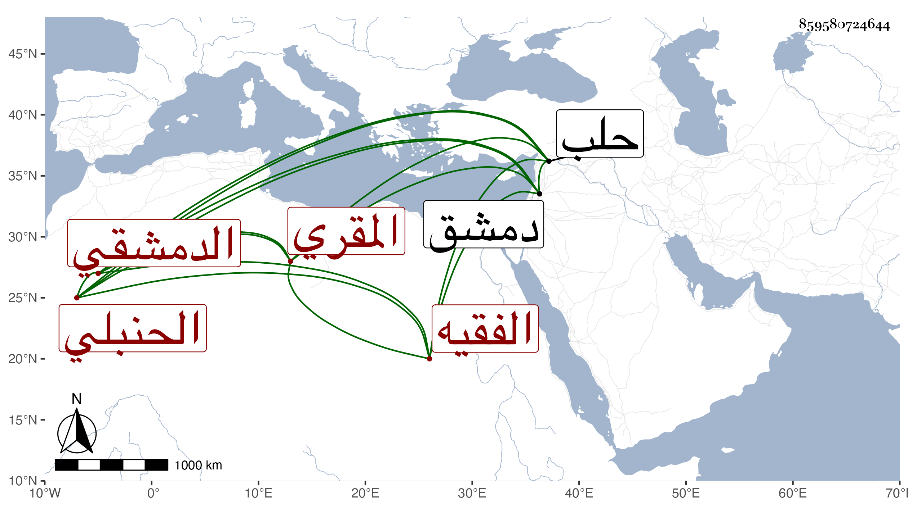

0902Sakhawi.DawLamic.ITO20230111-ara1.EIS1600.859580724644
Biography ID: 859580724644
202
محمد بن عبد الله بن عبد الله الشمس أبو عبد الله ثم الدمشقي الحنبلي الفقيه المقري . ترجمه البرهان الحلبي فقال : إنسان حسن حنبلي أصلا وفرعا من محبي التقي بن تيمية ، قدم حلب في عاشر المحرم سنة تسع وثلاثين فقرأ على سنن ابن ماجه ومشيخة الفخر ، ثم عاد إلى جهة دمشق في خامس عشريه كتب الله سلامته .
